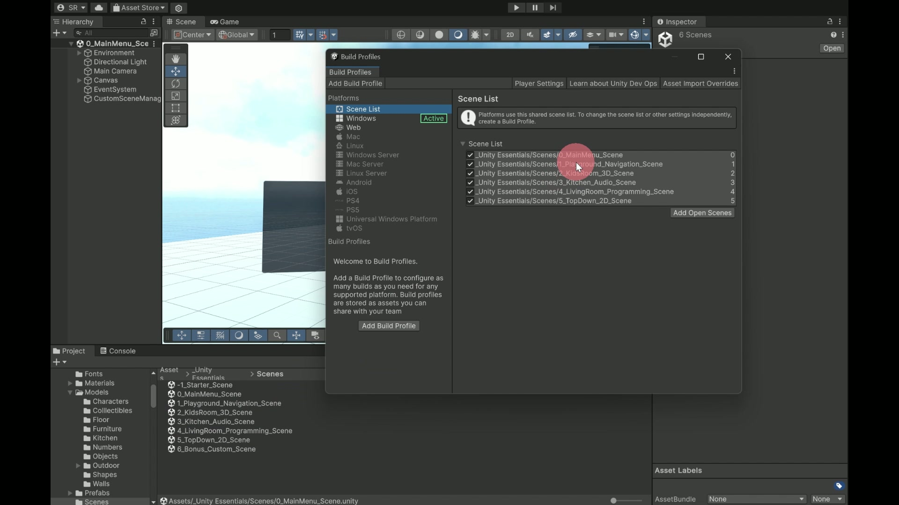
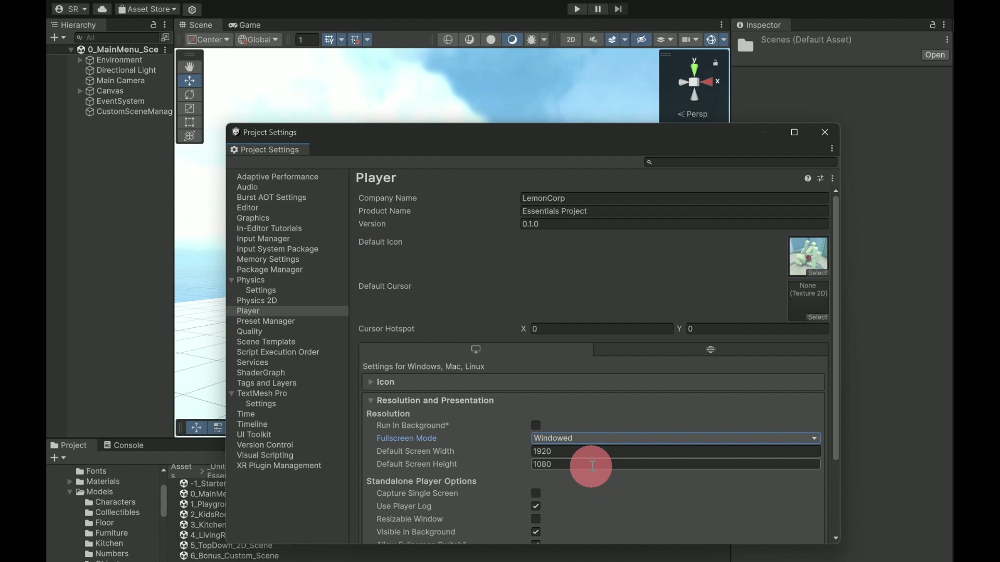
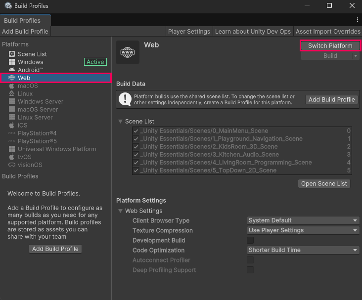
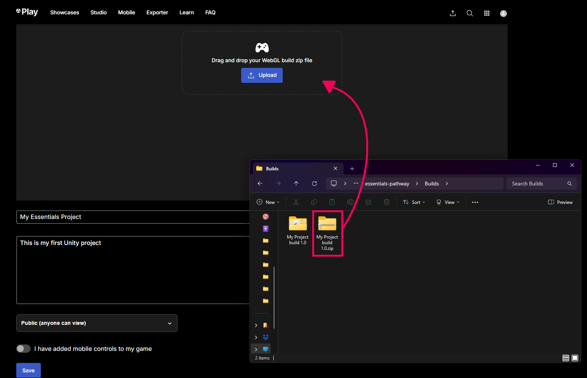
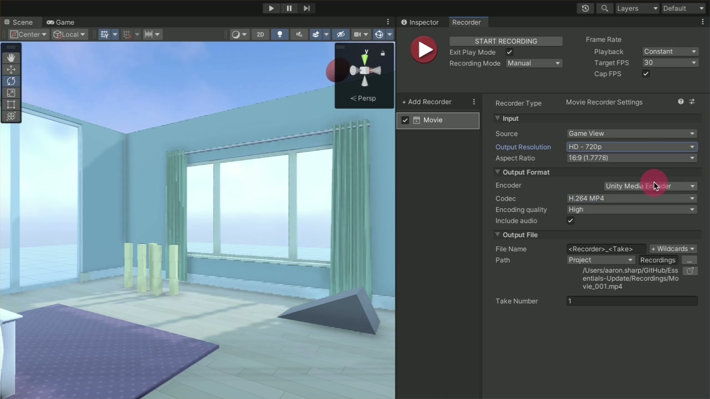
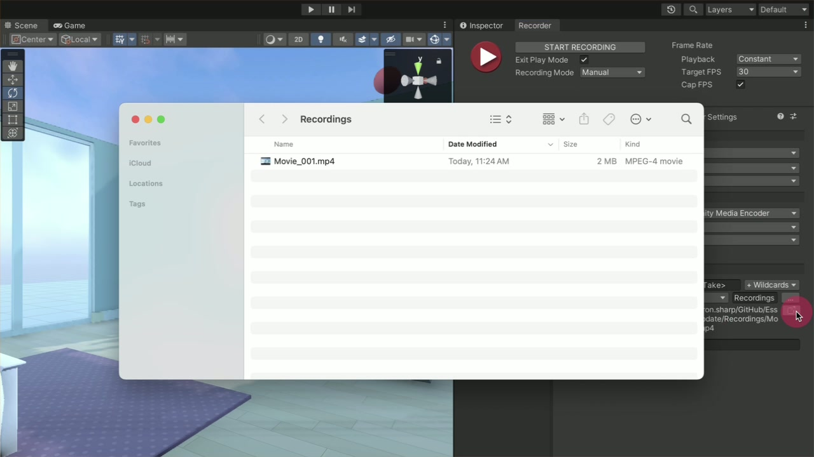
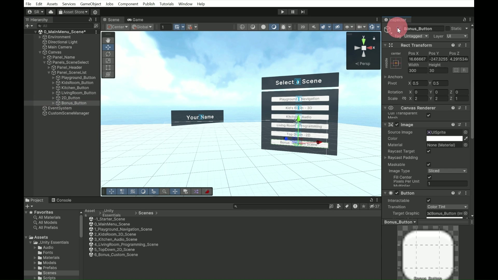

Turn separate scenes into a playable portfolio.
Continue with the same Essentials project used in Lecture 05. This lecture connects your earlier work, creates a browser build, and prepares evidence that someone else can inspect.
- Explain project, scene, build, and hosted release.
- Connect menu buttons to the correct scene indexes.
- Configure application identity and the Web target.
- Build, host, test, and update a playable release.
- Record a walkthrough and prepare a clear submission.
- Diagnose failures at the correct stage of publishing.
Understand what you are shipping
A Unity project is your editable source material. A build is the playable output produced for a target platform. Publishing makes that output available to an audience. A screen recording shows one run of the application; it cannot establish that every route works.
| Artifact | Purpose | Useful evidence |
|---|---|---|
| Project and scene assets | Store the editable GameObjects, components, assets, and settings | Reopen a saved scene and inspect a component |
| Web build folder | Contains the runtime code and data a browser needs | Launch the generated application through a web server |
| Hosted project page | Provides the playable release, title, description, and access settings | Open the shared URL in another browser session |
| Walkthrough video | Shows selected behavior in a fixed sequence | Play the saved movie and inspect its picture and audio |
Use a release loop: save → build → test → upload → test the shared URL. A successful build only establishes that Unity generated output. Your release checks establish whether the player can actually use it.
Test the result
For a change to a collectible’s position, identify the artifacts that become out of date. Then repeat for a correction to the hosted description. Explain why rebuilding a project does not automatically replace an uploaded ZIP.
Connect every button to a scene
The supplied menu loads scenes by build index. Its first scene button requests index 1; index 0 is the menu. The number in an asset’s filename is a helpful convention, but the enabled build list determines its index. A saved scene can exist in the project and still be absent from a build.
- Open File > Build Profiles (Ctrl + Shift + B; macOS: Cmd + Shift + B). In the tutorial workflow, choose Scene List in the Platforms panel.
- Remove unwanted entries from the list; this does not delete their scene assets. Drag your completed scenes from the Project window into the list. Exclude the Starter scene and duplicate alternatives.
- Enable the six intended scenes and arrange them in the order below. If you used a renamed copy, put that version in its intended position.
- Start Play mode from the menu. Open every scene and use Esc to return. Record the requested index and actual destination for any mismatch.
| Index | Scene asset | Role |
|---|---|---|
| 0 | 0_MainMenu_Scene | Entry point and return destination |
| 1 | 1_Playground_Navigation_Scene | Navigation and mural |
| 2 | 2_KidsRoom_3D_Scene | 3D objects and physics |
| 3 | 3_Kitchen_Audio_Scene | Audio environment |
| 4 | 4_LivingRoom_Programming_Scene | Scripted interaction |
| 5 | 5_TopDown_2D_Scene | 2D collection room |

Test the result
Predict what happens if the enabled scenes at indexes 2 and 3 are swapped. In the list, swap them, test the two buttons, and restore the intended order. Do not rename the assets. Explain why the destinations changed.
Set identity and interpret platform settings
Player Settings configure the generated application. They do not replace the text on your menu or the description on a hosting page. Treat those three places as separate content that should agree.
- In Build Profiles, open Player Settings. Set Company Name and Product Name. Choose a square project image for Default Icon.
- For a desktop target, inspect Resolution and Presentation: the tutorial uses Windowed with a 16:9 size such as 1280 × 720 or 1920 × 1080.
- When targeting Web, use the Web platform’s settings and test the browser canvas. A desktop window-size setting is not evidence that the hosted page displays correctly.

| Setting location | What it controls | Verify it here |
|---|---|---|
| Menu’s TextMeshPro component | Text shown inside the scene | Game view and the built menu |
| Player Settings | Application identity and platform configuration | Selected target and generated player |
| Unity Play project details | Title, description, and visibility on the host | The published project page |
Test the result
Write the intended product name in your release notes. Compare it with the menu and hosted title. Explain where you would edit each one. Check the actual browser size before concluding that the UI is ready.
Reference: Build your portfolio project.
Build and run outside the Editor
Changing the active platform prepares the project for that target; it does not upload anything. Unity may need time to process assets after a switch. Build only after the target has become active and the Console has no blocking errors.
- In File > Build Profiles, select Platforms > Web, then Switch Platform. If support is missing, use Install with Unity Hub to add WebGL Build Support for this Editor installation.
- If Web is unavailable in the list, open Add Build Profile and choose Web. In the custom-profile workflow, name the profile, add it, then select Switch Profile; confirm its Active badge.
- Recheck the active scene list and save your scenes. Select Build and Run for a local browser test. Choose a dedicated output folder such as
Web Builds/Portfolio-v1. Build creates output without launching it. - Test the menu, every destination, return navigation, audio, and the 2D objective in the browser. Keep this output folder together for publishing.

| Generated item | Role | Handling rule |
|---|---|---|
index.html | Entry page for the browser application | Keep it with the generated folders |
Build/ | Loader JavaScript, runtime, WebAssembly, and project data | Upload the complete output, not a single runtime file |
TemplateData/, when generated | Page styling and template resources | Preserve its path relative to the entry page |
file://. Double-clicking index.html is not a reliable test. Use Build and Run or a correctly configured web server. Unity Web testing guidance.Test the result
Close the running preview, then reopen it through the local test server or Build and Run. Confirm that the application starts at the menu without relying on whichever scene was last open in the Editor.
Reference: Create and manage build profiles.
Reference: Web Build folder.
Verify the release a visitor receives
A hosting page adds a delivery layer: the ZIP must contain the right build, the page must expose it to the intended audience, and the browser must load it successfully. Test the shared URL after uploading, even if your local browser test passed.
- Compress the complete build output folder into a ZIP. Include its entry page and supporting directories; do not upload the Unity source project.
- Sign in and open Unity Play upload. Drop the ZIP into the upload area and wait for processing.
- Set Title, Description, and Visibility. Include controls and a concise description of what the visitor can try. Select Save.
- Open the resulting project URL in a desktop browser. Test it in a fresh session or ask a classmate to open the link. Fix issues in the project, rebuild, and update the existing Unity Play project with the replacement build.

| Check | Action | Pass condition |
|---|---|---|
| Entry point | Open the shared URL from a fresh session | The menu appears and identifies the project |
| Navigation | Visit each of the five scenes and return | Every label opens the correct destination |
| Interaction | Move, trigger an effect, and collect an item | Input and feedback behave as expected |
| Presentation | Resize the view; inspect UI and listen after interacting | No essential label is clipped; intended audio is audible |
| Access and version | Open the link as a visitor; inspect one recent change | The intended audience can play the updated build |
Test the result
After the first upload, make one small, visible menu change and rebuild. Update the same hosted project, reopen its URL, and verify the change. Log one issue, the fix, and the browser result.
Reference: Publish to WebGL.
Capture evidence that can be reviewed
Choose a short route that demonstrates the application’s behavior. A useful recording shows the menu, the transition into a scene, one interaction, and a return. Record deliberate actions slowly enough to make cause and effect visible.
- Open Window > Package Management > Package Manager. Select Unity Registry, search for Recorder, and install it.
- Open Window > General > Recorder > Recorder Window. Choose Add Recorder > Movie.
- Use Source = Game View to capture the player’s view and UI. Select HD or FHD, a 16:9 aspect ratio, and a movie format such as H.264 MP4. Check the output Path; enable Output Format > Include Audio for the sound demonstration.
- Select Start Recording; Recorder enters Play mode. Perform the planned route, then select Stop Recording. Open the output location from the Path area and play the saved file.

| Choice | Reason | Check in the saved movie |
|---|---|---|
| Game View | Follows the visible gameplay and UI across scenes | Menu, counters, and transitions are present |
| HD/FHD and 16:9 | Provides a consistent recording frame | Text is readable and important objects remain visible |
| Audio capture | Preserves the sound demonstration | The intended sounds are present at a usable volume |
| Explicit output path | Makes the final file easy to locate | The movie opens outside Unity |
Test the result
Record a 10-second sample before the full walkthrough. Watch the file, check UI framing and sound, then correct the settings. A recording that looks good inside Unity may still have the wrong output resolution or missing audio.

Reference: Movie Recorder properties.
Prepare a submission someone can evaluate
Give the reviewer enough context to repeat your demonstration. A title and a screenshot identify the work; controls and a playable link make it testable. Describe your contributions precisely, especially when the scene contains supplied assets or scripts.
| Submission item | Include | Reviewer can verify |
|---|---|---|
| Title and description | Project name, controls, objective, and your changes | What to try and what you implemented |
| Screenshots | Menu and enabled Scene List; add a representative gameplay image if useful | Identity and the intended scene configuration |
| Walkthrough video | A planned sequence with legible UI | Navigation and selected interactions |
| Playable URL | The tested Unity Play project link | Behavior beyond the recorded sequence |
| Test note | Browser tested, one issue fixed, and a remaining limitation if any | The scope of your verification |
For the Unity Learn pathway submission, open Share your project. Add a title, description, and screenshots or recording; include the Web link in the description. Select the intended Public or Private visibility, choose Save and preview submission, inspect the preview, then complete the CAPTCHA and select Submit and continue. Unity Learn’s submission is separate from the Unity Play hosting page.
Test the result
Give a classmate only your description and link. Observe whether they can launch a scene, perform its intended action, and return to the menu without verbal help. Revise the instructions where they hesitate.
Applied task — release your Essentials portfolio
Deliverable: a tested Unity Play portfolio containing the menu and five completed scenes, plus screenshots, a walkthrough, and a short test note. The evidence quantities below are course exercise constraints.
- Personalize and save the menu. Include the intended scenes at indexes 0–5; keep the unused Bonus button inactive. Verify all destinations and returns.
- Configure product identity, activate Web, and create a complete build. Pass the local browser checks before packaging the output.
- Publish on Unity Play and test the shared URL. Document one issue you found, the correction, and the result after rebuilding and updating.
- Record a 60–90 second walkthrough showing the menu, at least one 3D interaction, the 2D collection feedback, and a return to the menu. Capture two screenshots: the menu and the scene list.
- Prepare a submission with the link, controls, your main contributions, screenshots, recording, and browser test note. If completing the Unity Learn pathway, submit it through the source exercise too.
Test the result
Use the submitted URL and instructions for the final check. A reviewer should be able to reproduce the behaviors in your video using the playable release. Resolve any mismatch before calling the required task complete.
Optional extension — integrate one bonus scene
Deliverable: one additional playable scene connected to the existing menu and included in an updated release. Choose one of Unity’s three directions below. This extension is not required for lecture completion.
- Open 0_MainMenu_Scene. Select Canvas > Panels_SceneSelect > Panel_SceneList > Bonus_Button and activate the GameObject.
- Add 6_Bonus_Custom_Scene at the bottom of the enabled Scene List, at index 6. Build one focused experience using a direction below.
- Verify that the Bonus button opens it and that a return path works. Rebuild, update the existing hosted project, and retest all earlier menu routes.
| Direction | Implementation focus | Completion evidence |
|---|---|---|
| Connected 3D rooms | Select room contents, use Create Empty Parent, and save the group in My Prefabs. Instantiate your room prefabs in the bonus scene and align their doors. | A continuous route through physics, audio, and interaction spaces |
| Personal art gallery | Start with Prefabs > Rooms > 04_Gallery. Place images or models with descriptions and deliberate viewing positions. | A readable exhibit sequence shown from the player camera |
| Third-person adventure | Start with Source Files > SpaceRobotKyle > Prefabs > Player, which includes a controller and camera. Define a goal, then add compatible collectibles and feedback. | A short playable route with an observable success condition |

Test the result
Capture the added experience and one sentence explaining the integration problem you solved. Verify a previously working route after the update to detect accidental changes to the scene order.
Reference: Challenge: Add a bonus scene.
Completion criteria and diagnosis
The lecture is complete when the required portfolio is playable and its evidence is ready. The optional bonus scene is not part of these checks.
| Symptom | Likely cause | Next check |
|---|---|---|
| Button does not load a scene | Target excluded or absent from the active list | Read the Console, then compare requested index with the enabled list |
| Button opens the wrong room | Scene order changed | Compare every enabled index with the mapping table |
| Web target is unavailable | Module missing for this Editor installation | Install WebGL Build Support through Unity Hub |
| Build fails | Compilation or build error | Inspect the first relevant Console error before rebuilding |
| Local HTML fails to load | Opened through file:// | Use Build and Run or an appropriate web server |
| Hosted page is blank or reports missing files | Incomplete ZIP or failed processing | Inspect the full output folder and the host’s upload status |
| Hosted version still looks old | Old output uploaded or a different release page opened | Confirm ZIP contents, existing project, and visible version change |
| Browser ignores keys or audio is silent | Canvas focus, browser interaction requirements, or application configuration | Click inside the player; check focus, mute state, then application settings |
| Recording omits UI or sound | Wrong capture source or audio configuration | Check Game View source and audio, then inspect a short saved sample |
Explain before you finish
- Why can a scene work in Play mode but be unavailable from the built menu?
- Which two settings must you check when a custom build profile launches the wrong content?
- What must be repeated after editing a scene that is already published?
- What can a playable link demonstrate that a walkthrough cannot?
Official sources
All five parts of the supplied Publishing Essentials unit are covered. Procedures follow the Unity Learn 6.3 pages; current 6.3 manual details clarify profile controls. Tutorial images retain the interface shown in their original media.
- Publishing Essentials — unit overview
- Build your portfolio project — menu, scene order, Player Settings
- Publish to WebGL — target, build, Unity Play, testing
- Challenge: Add a bonus scene — optional integration directions
- Capture a video of your project — Recorder and external capture
- Share your project — submission and preview
- Unity 6.3 Manual — create and manage build profiles
- Unity 6.3 Manual — manage scenes in a build
- Unity 6.3 Manual — Web development and publishing process
- Unity 6.3 Manual — Web Build folder
- Recorder 5.1 Manual — Movie Recorder properties